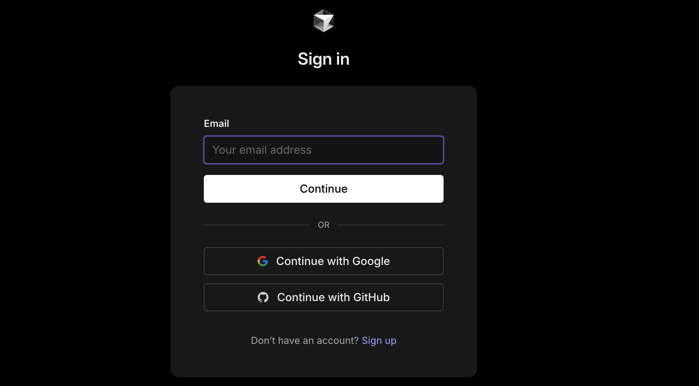
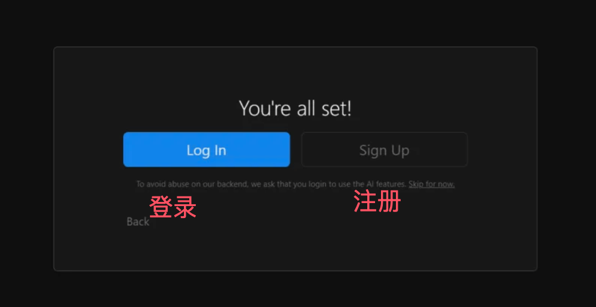

Cursor Settings
In the previous chapter we learnedCursor Installation, next comes configuration.
First startup process:
1. Welcome screen
- Select interface language (supports Chinese, English, etc.)
- Read and accept the terms of service
- Choose whether to send usage data to improve the product
2. Theme and appearance settings
- Choose Dark/Light Theme
- Adjust font size (default, large, extra large)
- Set color theme (default, high contrast, etc.)
3. Keyboard shortcut scheme
- Default scheme (Cursor native)
- VS Code compatible scheme
- Vim mode (for Vim users)
- Custom Scheme
4. Programming language detection
- Cursor will scan the development tools installed on your system
- Automatically configure support for common programming languages
- Prompt to install missing language servers
5. Workspace settings
- Select default workspace location
- Configure project template paths
- Set auto-save options

Account registration and login
Create Cursor account:

Registration method selection
- Email registration (recommended)
- Google account login
- GitHub account login
Email registration process
- Click the "Sign up" button
- Enter email address and password
- Confirm password and agree to terms of service
- Click the verification link sent to email
- Automatically log in after completing email verification

Third-party account login
- Select the corresponding third-party login option
- Authorize Cursor to access basic information
- Automatically complete account creation and login
Account configuration options:
- Personal information settings: name, avatar, timezone
- Notification Preferences: Email notifications, product updates, feature reminders
- Privacy Settings: data usage authorization, telemetry data collection
- Team Invitation: join existing team or create new team
License and paid plan description
Free plan (Cursor Free):
| Features | Free plan limits |
|---|---|
| AI conversation count | 200 conversations per month |
| Code Generation | 2000 completions per month |
| Project Count | Unlimited |
| File Size | Maximum 100MB per file |
| Model Selection | Basic model (GPT-3.5 equivalent) |
| Team Collaboration | Up to 3 people |
| Technical Support | Community Support |
Pro Plan (Cursor Pro - $20/month):
| Features | Pro Plan |
|---|---|
| AI conversation count | Unlimited |
| Code Generation | Unlimited |
| Advanced Models | GPT-4, Claude and other advanced models |
| Priority Processing | Faster response speed |
| Advanced Features | Code review, intelligent refactoring |
| Team Collaboration | Up to 10 people |
| Technical Support | Email Support |
| Storage Space | 100GB cloud storage |
Team plan (Cursor Business - $40/user/month):
| Features | Team Plan |
|---|---|
| All Pro features | ✓ |
| Team Members | Unlimited |
| Admin Console | User management, permission control |
| Single sign-on (SSO) | SAML/OIDC Support |
| Audit Logs | Detailed usage records |
| Custom Models | Enterprise-grade AI models |
| Priority Support | Dedicated customer success manager |
| Data Privacy | Enterprise-grade data protection |
Plan selection recommendations:
- Individual learning users: Free plan is sufficient for daily learning use
- Professional Developers: Recommend Pro plan for full AI experience
- Small Teams: Pro plan meets small-scale collaboration needs
- Enterprise Users: Choose Business plan to ensure security and control
Upgrade and payment process:
-
Choose Plan
- Click "Upgrade" in settings
- Compare feature differences between plans
- Choose the right paid plan
-
Payment Method
- Credit card payment (Visa, MasterCard, AmEx)
- PayPal payment
- Enterprise invoice payment (Business plan)
-
Subscription Management
- Upgrade or downgrade plan anytime
- Pay monthly or annually (annual payment has discount)
- After canceling the subscription, you can use it until the end of the current billing cycle